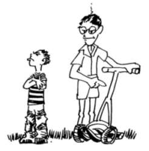
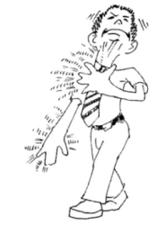

This page has usage examples for the following words:

Achilles tendon アキレス腱 アキレスけん
nerve(s) 神経 しんけい
nervous twitch 神経性痙攣 しんけいせいけいれん
neuroparalysis 神経麻痺 しんけいまひ
neuralgia 神経痛 しんけいつう
peripheral nerve 抹梢神経 まっしょうしんけい
rehabilitation リハビリ
tendon 腱 けん
tendonitis 腱鞘炎 けんしょうえん
writer's cramp 書痙 しょけい
I hurt(sprained) my fingers during basketball practice.
バスケットの試合中、突き指をしました。
バスケットのしあいちゅう、つきゆびをしました。
I sprained my ankle during track practice. It hurts very badly.
陸上競技の最中に、足首をねじって、ひどく痛みます。
りくじょうきょうぎのさいちゅうに、あしくびをねじって、ひどくいたみます。
I am worried about my achilles tendon.
アキレスけんが切れたのでしょうか。
アキレスけんが きれたのでしょうか。
I practiced piano too much and now my fingers hurt.
ピアノを弾き過ぎて、指の筋が痛みます。
ピアノをひきすぎて、ゆびのすじがいたみます。
My left ring finger has been hurt ever since I practiced a difficult passage of piano music.
難しいパッセージを練習して、左手薬指の神経を痛めたようです。
むずかしいパッセージをれんしゅうして、ひだりてくすりゆびの しんけいをいためたようです。
What you've got is tendonitis. That will require surgery.
けんしょう炎なので、手術の必要があります。
けんしょうえんなので、しゅじゅつのひつようがあります。
My neck is so stiff, I can hardly turn my head.
首の筋がこわばって動きません。
くびのすじがこわばって うごきません。
I am unable to raise my arms above my shoulders.
腕が肩より上に上がらなくなりました。
うでが かたよりうえに あがらなくなりました。
Did you lift anything heavy?
何か重い物を持ちましたか？
なにかおもいものをもちましたか？

A conversation between a patient and a doctor about the nerves
Patient:
The son of a neighbor hurt his wrist while playing basketball at school. As he takes violin lessons enthusiastically, I hope he gets well soon. I heard that my daughter’s piano teacher hurt her fingers because of excessive piano playing. In daily conversation, we use expressions such as “I hurt my nerves” or “I have a strain in my leg, but we really don’t differentiate nerve from muscle. Can you explain the difference between the two? By the way, is a stiff neck or stiff shoulder caused by a damaged nerve?
ご近所のお子さんが、学校でバスケットボールのプレー中、右手首の筋を痛めてしまいました。彼はヴァイオリンも熱心に習っているので早く良くなって欲しいのですが・・・また、娘のピアノの先生は、過度の練習のために指の神経を痛めたと聞きました。私達は、日常、「神経を痛めた」とか、「すじを違えた」と云う表現をしますが、このような場合に、実際には明確な違いを認識して言っているのではありません。少し説明して下さい。話はややそれますが、肩こりや首のこりは同じようなものでしょうか。
Doctor:
Nerves and muscles function in close relationship. When either one malfunctions, both nerve and muscle are unable to function well. When muscles are damaged, nerves become hypersensitive. When nerves are damaged, muscles become weak. In our daily lives, we seem to refer to “muscles and tendons” when injuries are related to exercise and to “nerves” when fingers, which should do precise movements, are damaged, or pain persists, even when it is unrelated to exercise.
神経と筋肉は、密接に関連して機能しますので、どちらが一方に障害が起こると、他方も、うまく機能することができません。筋肉を痛めると神経が過敏になりますし、神経に障害があると筋肉が衰えます。普通に運動に関連した場合は「筋肉やすじ」、精密な動きを必要とする手先などの場合や、運動をしていなくても痛みが持続する場合は「神経」といっているように思います。

My two cents 一言おせっかい
Now that everything is processed using computers, a lot of people suffer from pain in the fingers. Such pain seems to be one of the modern diseases, along with back pain. Appropriate treatment is very important.
何もかもコンピューターで処理するようになり、それにつれて、手指の痛みを訴える人が多くなりました。腰の痛みと共に、現代病の一つと言えます。適切な治療を受けるようにしてください。
[shi02]
| © 1995-2013 NACOS International Institute. All Rights Reserved. |